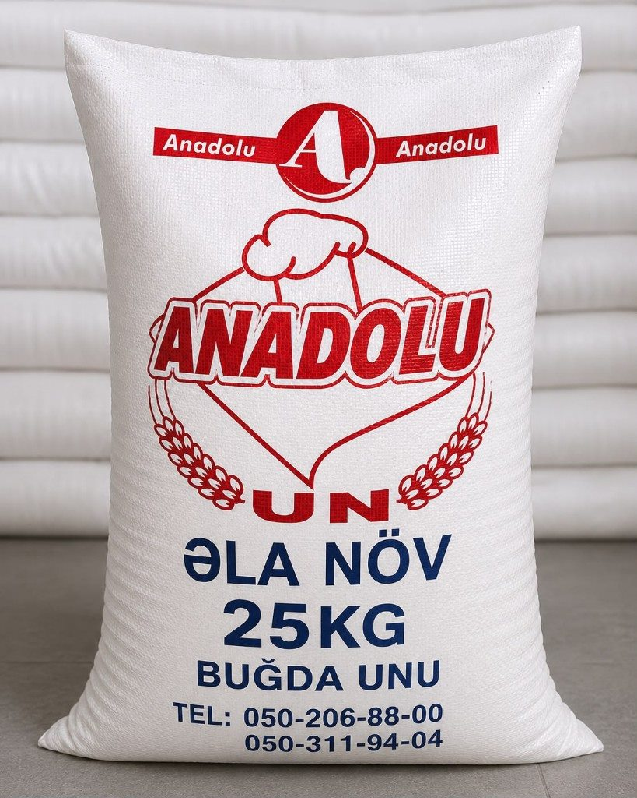

Anadolu Qida — a clearer home for a flour producer.
Brand-led website design and development for a Baku-based flour company: product clarity, production story and a practical corporate enquiry path.
The work turned a production business into a credible digital presence — so buyers and partners can understand the offer, trust the operation and start an order conversation without friction.
- Client
- Anadolu Qida
- Role
- Strategy, UI/UX, development
- Duration
- Approx. four weeks
- Status
- Live client project

A real production business needed a website that felt as solid as the factory.
Anadolu Qida produces flour for bakeries, dough kitchens and corporate supply. The digital presence had to present packaging options clearly, explain the production approach and route serious buyers to enquiry — while keeping a second brand, Mirvari Logistics, reachable from the same system.
One editorial system for products, values and corporate orders.
The interface leads with product truth: pack sizes, use cases and production control. Strong photography carries identity; restrained typography and predictable navigation carry the commercial path. Values, catalogue and enquiry sit in one coherent hierarchy instead of disconnected marketing pages.



A live business website ready for product browsing and corporate enquiry.
The delivered site gives Anadolu Qida a clear public face: flour products, production story, certificates path and order contact. Mirvari Logistics remains connected through a deliberate brand switch. No invented traffic metrics are published here — the proof is the live site and a clearer commercial story.
See the project in its live context.
Visit Anadolu Qida or discuss a related business website with Vulcet.
Visit Anadolu Qida Discuss a project